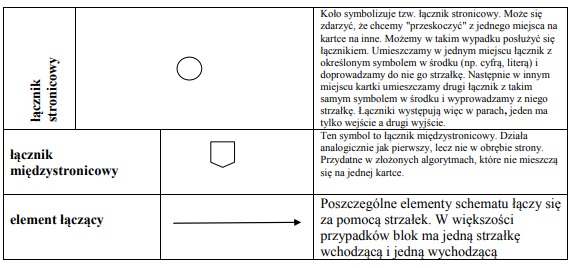

1. Co to jest programowanie i jego etapy
Programowanie to proces składający się z etapów:
a)tworzenia programu,
b) testowanie programu.
2. Wymienić i opisać reguły programowania
Język programowania musi mieść określone:
a)Reguły syntaktyczne-> reguły składni wyrażeń i funkcji użytych w programie,
b)Reguły semantyczne-> semantyka języka programowania definiuje precyzyjnie znaczenie poszczególnych symboli (instrukcje, operatory itp.) oraz ich funkcję w programie.
3. algorytm - definicja
Algorytm-> to jednoznaczny przepis, opisujący krok po kroku sposób postępowania w celu
rozwiązania pewnego problemu lub sposobu osiągnięcia jakiegoś celu.
4. cechy charakterystyczne poprawnego algorytmu
1. Poprawność - dla każdego przypisanego zestawu danych, po wykonaniu skończonej liczby czynności, algorytm prowadzi do poprawnych wyników.
2. Jednoznaczność - w każdym przypadku zastosowania algorytmu dla tych samych danych otrzymamy ten sam wynik.
3. Szczegółowość - wykonawca algorytmu musi rozumieć opisane czynności i potrafić je wykonywać.
4. Uniwersalność - algorytm ma służyć rozwiązywaniu pewnej grupy zadań, a nie tylko jednego zadania. Przykładowo algorytm na rozwiązywanie równań w postaci ax + b=0 ma je rozwiązać dla dowolnych współczynników a i b, a nie tylko dla jednego konkretnego zadania, np. 2x + 6 = 0
5. Skończoność – dla każdego zbioru poprawnych danych wejściowych algorytm powinien zwracać wyniki w skończonej liczbie kroków.
6. Efektywność – algorytm powinien rozwiązywać problem w jak najmniejszej liczbie kroków.
5. etapy konstruowania algorytmu
1. Sformułowanie zadania.
2. Określenie danych wejściowych.
3. Określenie wyniku oraz sposobu jego prezentacji.
4. Ustalenie metody wykonania zadania.
5. Przy użyciu wybranej metody następuje zapisanie algorytmu.
6. Dokonujemy analizy poprawności rozwiązania.
7. Testowanie rozwiązania dla różnych danych.
8. Ocena skuteczności tegoż algorytmu.
6. sposoby przedstawiania algorytmów wraz z opisem
słowny opis
schemat blokowy
lista kroków
drzewo algorytmu
drzewo wyrażeń
w pseudojęzyk
w język programowania.
7. specyfikacja problemu
Jest to dokładny opis problemu, który chcemy rozwiązać. Specyfikacja składa się z:
danych wejściowych,
dane wyjściowe oraz warunki jakie muszą spełniać (czyli związek pomiędzy danymi a wynikami).
warunki jakie muszą spełniać dane wejściowe
rysunki ( jeśli są konieczne), wzory obliczeniowe
8. symbole stosowane w schematach blokowych (tabela - mogą być zrzuty ekranu)


9. reguły rysowania schematów blokowych
I. Po zbudowaniu schematu blokowego nie powinno być takich strzałek, które z nikąd nie wychodzą, lub do nikąd nie dochodzą.
II. Każdy schemat blokowy musi mieć tylko jeden element startowy oraz co najmniej jeden element końca algorytmu.
III. Element łączący(strzałki łączące) powinien być rysowany w poziomie i pionie, załamania pod kątem prostym.
10. podział algorytmów wraz z opisem
Definicja algorytmu liniowego. Algorytmem liniowym nazywamy taki algorytm, który ma postać listy kroków wykonywanych zgodnie z ich kolejnością.
Algorytmy liniowe są zapisem obliczeń, które mają postać ciągu operacji rachunkowych wykonywanych bez sprawdzania jakichkolwiek warunków.
Algorytm z warunkami (rozgałęzieniami). Ten typ algorytmu musi mieć bloki decyzyjne czyli bloki sprawdzania warunków.
Algorytm numeryczne. Algorytmy, które wykonują działania matematyczne na danych liczbowych, nazywamy algorytmami numerycznymi. Algorytm typu dziel i zwyciężaj. Dzielimy problem na kilka mniejszych, a te znowu dzielimy, aż ich rozwiązania staną się oczywiste,
Algorytmy iteracyjne. Iteracja jest to zapętlenie algorytmu, czyli wykonywania danych działań, dopóki warunek iteracji nie zostanie spełniony. Jest ona podstawą wszystkich choć troszkę bardziej złożonych algorytmów. Zazwyczaj ma ona składnię wykonuj "jakaś czynność" dopóki "jakieś wyrażenie logiczne".
Algorytmy rekurencyjne. Rekurencje wykorzystuje się do rozwiązywania problemów gdzie powtarza się czynność aby do niego dojść. Swoim działaniem przypomina iteracje. Jednak w tym przypadku funkcja
11.opis pojęć: złożoność algorytmu, złożoność obliczeniowa, złożoność czasowa, złożoność pamięciowa
Złożoność algorytmu- ilość zasobów potrzebnych do poprawnego działania danego algorytmu
Złożoności obliczeniowa-Algorytm wykonujący najmniejszą ilość operacji podstawowych w celu rozwiązania problemu.
Złożoność czasowa- Określa ilość operacji podstawowych potrzebnych do wykonania algorytmu o danej wielkości wejściowej.
Złożoność pamięciowa- Określa ilość przestrzeni pamięci wirtualnej potrzebnej do wykonania algorytmu z określonym zestawem danych wejściowych
12. Co to są kody ASCII (plus kawałek tabeli kodu ASCII)
Kody ASCII to siedmiobitowy system kodowania znaków, używany we współczesnych komputerach oraz sieciach komputerowych, a także innych urządzeniach wyposażonych w mikroprocesor.